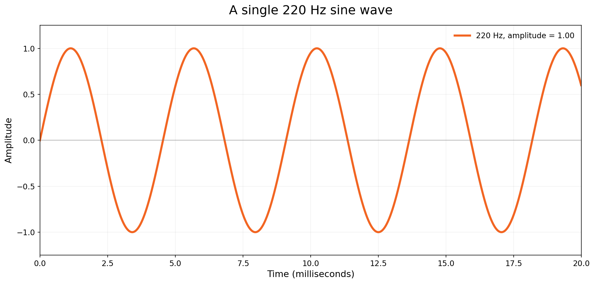
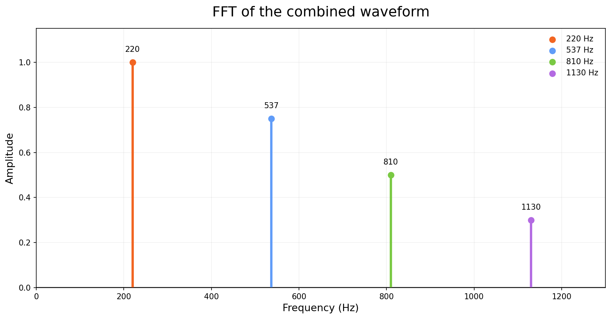
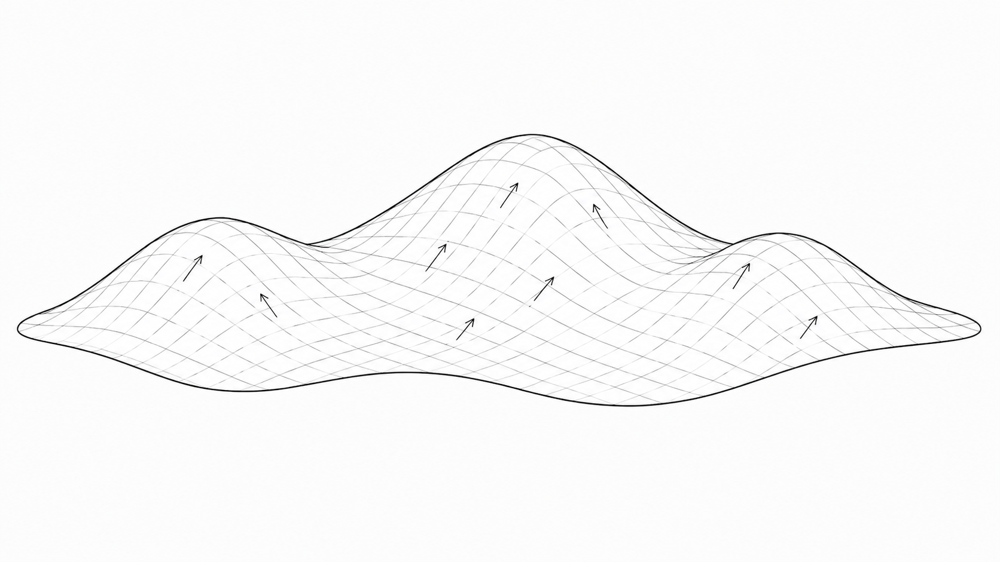
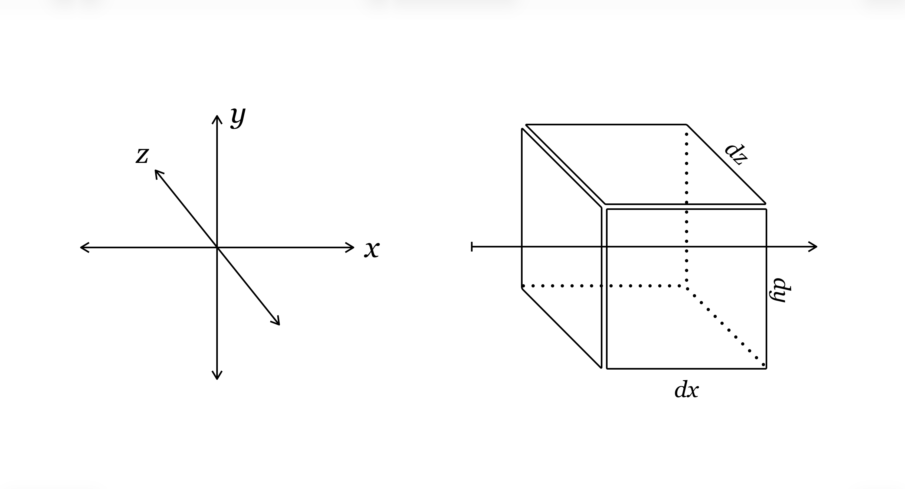

The visualizations are pretty and fun to play with, but what in the
math is going on? Let's start with a musical waveform, something you
might see in digital recording software or if you ran an audio output
into an oscilloscope. Music, as with most natural phenomena, is a
superposition of many different frequencies.
Building a waveform from components

Begin with a single sine wave at 220 Hz.
Frame 1 of 7
Notice how the waves with higher frequencies and lower amplitudes add detail
while preserving the larger structure already established. The process can be
reversed, which is how MP3 compression works. The audio is analyzed
to determine which frequencies are present, and then the sound is stored as a
list of those frequencies and their amplitudes. When the audio is played back, the
frequencies are recombined to reconstruct the original waveform. An fft plot
(Fast Fourier Transform) shows the amplitude of each frequency present in a waveform.

The Fourier transform of the combined waveform shows four peaks,
one for each frequency present in the signal. The height of each
peak gives the amplitude of that frequency.
In the same way, a complicated pattern on the surface of a sphere can be
decomposed into spherical harmonics. Spherical harmonics are Fourier
modes on a sphere and form a complete orthonormal basis
for functions on the sphere. “Orthonormal” means that the individual modes
can be separated cleanly from one another. “Complete” means that, by adding
enough modes, we can approximate any sufficiently well-behaved function on
the sphere as closely as we choose. The sum is infinite:
In practice, a handful of modes are often enough to capture the essential
features of a function and create a very good working model of many
physical phenomena.
Let's take a look under the hood of spherical
harmonics, beginning with the divergence of the gradient, also
known as the Laplacian: \(\nabla\cdot(\nabla u) = \nabla^2 u = \Delta u\)
The Gradient
Imagine you are walking in a hilly country. Stop at any point
and look around. The gradient is a vector field that
points toward the maximum rate of increase at all points. At
the top of a hill, the gradient is zero—there's nowhere
“up” to go. On the side of a hill, the gradient points along
the steepest local incline. As you might have guessed, the
gradient is the first derivative—the rate of change—
in all three dimensions:
What is happening around the gradient locally? In a valley, the gradient
vectors point outward and up the walls. At another point, the gradient
might point along a crest toward a higher peak, even while nearby vectors
converge toward the ridge from either side. This local behavior
of the vector field is measured by the divergence of the
gradient: the net outward flow of the vector field around a point.
Divergence applies to temperature gradients, electric fields, and many
other phenomena. Along a vibrating string or across a drum head,
the divergence of the gradient varies periodically. That's why we're
interested in the divergence of the gradient; spherical harmonics
exhibit analogous behavior on the surface of a sphere (though they may
model periodicity across spatial dimensions, rather than time).
Because the gradient already contains the first derivatives of \(u\),
taking its divergence produces the second derivatives in all three
dimensions:
\[
\nabla^2 u
=
\frac{\partial^2 u}{\partial x^2}
+
\frac{\partial^2 u}{\partial y^2}
+
\frac{\partial^2 u}{\partial z^2}
=
\Delta u
\]
Divergence as a scalar field

Here's our hilly landscape with the gradient overlaid.
1 / 6
Can you see how the Laplacian—the divergence of the gradient—
gives us fundamental information about the behavior of a function,
or mathematical “landscape,” at any point? If it's not clear, take
a break. Drink some water. Give your big, beautiful brain some time
to play with the idea.
I didn't create this website because I understood all the math.
I created it because I didn't and I wanted to.
I spent a whole summer reviewing and relearning concepts
I "should have known" to build these simulations. Physics is hard!
Be kind to yourself.
Are you ready? Okay, let's go!
The Gradient in Spherical Coordinates
In this case, we are interested in how this function behaves on a
sphere, so we will need the Laplacian in spherical coordinates.
Let's transform a Cartesian position vector from
\(\mathbf{r}(x,y,z)\) to \(\mathbf{r}(r,\theta,\phi)\)
\[
\begin{cases}
x = r\cos\phi\sin\theta\\
y = r\sin\phi\sin\theta\\
z = r\cos\theta
\end{cases}
\]
To find the gradient, we will take the first partial derivative of
the position vector with respect to each spherical coordinate.
Taking the magnitude of each derivative gives us the scale factors
needed to convert a small change in each coordinate into a physical
distance in spherical geometry.
A small change in the radial direction is simply \(dr\), because its
scale factor is \(1\). A small change in \(\theta\) corresponds to a
physical distance \(r\,d\theta\), while a small change in \(\phi\)
corresponds to a physical distance
\(r\sin\theta\,d\phi\). The spherical line element is therefore:
If you have never done this before, great work! You may have used the
Jacobian determinant in calculus without knowing where its components
came from. This is how those geometric scale factors are built.
Divergence in Spherical Coordinates
Now, we need to take the divergence of the gradient field:
\(\nabla\cdot\nabla u\), the net outward flux per unit volume.
What is the differential form of volume for our tiny box surrounding
any point?
\[
dV
=
(dr)(r\,d\theta)(r\sin\theta\,d\phi)
=
r^2\sin\theta\,dr\,d\theta\,d\phi
\]
The flux for each coordinate flows through an area bounded by the
other two coordinates. For example, in Cartesian coordinates, flux
along the \(x\)-direction would flow through an area in the
\(yz\)-plane. So, our equation should look something like:
\[
\nabla\cdot(\nabla u)
=
\frac{
\text{change in flux through each face}
}{
\text{volume of the box}
}
\]

Flux through a small Cartesian-coordinate volume
Let us call our gradient field \(\mathbf A\) for now to simplify
notation:
The denominator, representing the volume, will be the product of the
scale factors: \(h_rh_\theta h_\phi=r^2\sin\theta\). Each numerator
contains the area of the face perpendicular to the direction being
considered. For the radial direction:
That is the Laplacian in spherical coordinates! You may expand the
radial derivative using the product rule and use subscript notation
for partial derivatives:
However it is written, you may notice that the polar term is not
simplified. Leaving it in this form makes things cleaner later.
Now, about those spherical harmonics...
We can now ask what functions behave especially simply under the
Laplacian on a sphere. If you have not studied partial differential
equations, you can still understand this next solution method. The
Laplacian in spherical coordinates looks impossible, but we are going
to separate variables. Because the coordinates describe three
independent directions, let us assume there is a solution that can be
written as a product, analogous to multiplying coordinate lengths
together to obtain a volume:
When we differentiate with respect to any one coordinate, we treat
the other two functions as constants, turning the relevant partial
derivatives into ordinary derivatives. The radial derivative is:
Stop! Note that the radial and angular parts of the equation are
independent. The first term depends only on \(r\), while the
remaining terms depend only on \(\theta\) and \(\phi\). We could write
the equation as:
The only way the two sides can remain equal for every point in space
is if both sides are constant. We will therefore make them equal to a
separation constant, \(\lambda\):
The spherical harmonics arise from the angular equation.
To find them, we will now separate the polar and azimuthal dependence.
We will again assume that the equation can be separated like this:
\[
Y(\theta,\phi)
=
\Theta(\theta)\Phi(\phi)
\]
Multiply the angular equation by \(\sin^2\theta\):
If the two sides are equal at every point, each side must again equal
a constant. There is no reason you should know in advance to choose
this particular form, but setting the second separation constant to
\(m^2\), so that the azimuthal equation contains \(-m^2\), gives us a
convenient result:
This is a second-order differential equation whose solutions must
reproduce themselves after two derivatives (apart from a factor of
\(-m^2\)). Trigonometric functions have exactly this behavior! For
example, \(\frac{d^2}{d\phi^2}\sin\phi=-\sin\phi\).
So, the real solutions look like this:
\[
\Phi(\phi)
=
A\cos(m\phi)
+
B\sin(m\phi)
\]
However, let's look at the complex exponential solutions
\(\Phi(\phi)=Ce^{im\phi}\). Because the field must return
to the same value (because it's the same point) after
one complete rotation around the \(z\)-axis,
\(\Phi(\phi+2\pi)=\Phi(\phi)\). It's easy to see in the
exponential form:
This is the polar differential equation in the variable \(\theta\).
We're going to use another math trick to get this in terms of \(x\),
and again there's no reason you should have guessed that we would do
this. Define:
You may already see this problem, but allow me to point
out that having \(1-x^2\) in the denominator will cause
a singularity at the poles where \(\cos\theta = \pm 1.\)
In the next step, requiring the solutions to remain
finite and smooth at the poles will restrict the separation
constant to \(\lambda=\ell(\ell+1)\), where \(\ell\) is a
nonnegative integer and \(|m|\leq\ell\). Acceptable solutions
will become the associated Legendre functions \(P_\ell^m(x).\)
To see how this works, consider \(m=0\). Using prime
notation for the derivatives, the equation
above reduces to the ordinary Legendre equation:
In spherical harmonics, the input is \(x=\cos\theta,\)
so we get information about what value the function
has from pole to pole. \(\ell\) tells us which polynomial
solution to use, and \(m\) controls the azimuthal behavior
through \(e^{im\phi}\).
We found both pieces of the angular part of the equation,
so we now know the form the angular solution must take.
\(C_{\ell m}\) is, for the moment, an unknown constant:
We have found the shape of the solution, but any scalar multiple
would satisfy the differential equation. We therefore need one
more condition to choose a standard size. Spherical harmonics
are normally defined so that their total squared magnitude over
the sphere is \(1\):
The exponential has magnitude \(1\) (\(
\left|
e^{im\phi}
\right|^2
=
1\)),
so its integral is simply \(2\pi.\)
The associated Legendre functions satisfy what's called
an orthogonality relation, which means that different
modes do not overlap when compared across the whole sphere.
When two different angular patterns are multiplied together
and summed over the whole sphere, their positive and negative
parts cancel. When a mode is multiplied by itself, the
result is a definite nonzero value. That makes the second part
of the integral:
For my PDEs professor, lol, this calculation is written for
\(m\geq0\). The negative-\(m\) harmonics are obtained from
the corresponding positive-\(m\) harmonics through the
standard conjugation relation.
Now you can see that the factorials and square root
are not part of the differential equation. They set
every mode to the same standard total magnitude.
Over the course of the nineteenth and twentieth centuries,
mathematicians and physicists developed standard definitions
and normalizations for these functions so that the same
angular patterns could be used consistently across astronomy,
gravity, electromagnetism, quantum mechanics, and other
applications.
What might be fun for you now is to play around with
these functions with the appropriate computational power
to see quick results. Below is the code for a
Python cell that will create a Mollweide projection
of spherical harmonics and output the associated
Legendre function (\(P_\ell^m(x)\)). You can input the \(\ell\) and \(m\)
value, and then choose between real, imaginary, magnitude,
and phase representations.
Real shows the cosine-like positive and negative lobes of
the spherical harmonic. Imaginary shows the same pattern
shifted around the sphere, using the sine-like part instead.
Magnitude shows only the size of the harmonic, so negative
values become positive and the azimuthal phase pattern
disappears. Phase shows where each point lies in the complex
oscillation cycle, with the colors wrapping smoothly from the end
of one cycle back to the beginning. (\(\pi\rightarrow -\pi\))
Study the code and see for yourself how it works. Above all, have fun!
The code appears center-justified and has some odd symbols.
That is a result of html nesting to make things easy for you.
It copies and pastes correctly.
Python: Explore a spherical harmonic
import numpy as np
import matplotlib.pyplot as plt
from matplotlib.colors import LinearSegmentedColormap
from scipy.special import sph_harm_y
from sympy import symbols, assoc_legendre, latex
from IPython.display import display, Math
# ------------------------------------------------------------
# User input
# ------------------------------------------------------------
MAX_ELL = 30
def get_integer(prompt):
"""
Ask repeatedly until the user enters an integer.
"""
while True:
try:
return int(input(prompt))
except ValueError:
print("Please enter a whole number.")
ell = get_integer(
f"Choose ell from 0 to {MAX_ELL}: "
)
if ell < 0:
print("ell cannot be negative. Setting ell = 0.")
ell = 0
elif ell > MAX_ELL:
print(
f"ell is capped at {MAX_ELL} "
"to keep the calculation manageable."
)
ell = MAX_ELL
m = get_integer(
f"Choose m from {-ell} to {ell}: "
)
if m < -ell:
print(
f"m cannot be less than {-ell}. "
f"Setting m = {-ell}."
)
m = -ell
elif m > ell:
print(
f"m cannot be greater than {ell}. "
f"Setting m = {ell}."
)
m = ell
valid_display_modes = {
"real",
"imaginary",
"magnitude",
"phase"
}
display_mode = input(
"Choose real, imaginary, magnitude, or phase: "
).strip().lower()
while display_mode not in valid_display_modes:
print(
"Please enter real, imaginary, "
"magnitude, or phase."
)
display_mode = input(
"Choose display mode: "
).strip().lower()
# ------------------------------------------------------------
# Symbolic associated Legendre function
# ------------------------------------------------------------
x = symbols("x")
P_lm = assoc_legendre(
ell,
m,
x
)
display(
Math(
rf"P_{{{ell}}}^{{{m}}}(x)"
rf"="
rf"{latex(P_lm)}"
)
)
# ------------------------------------------------------------
# Longitude-latitude grid
# ------------------------------------------------------------
longitude = np.linspace(
-np.pi,
np.pi,
500
)
latitude = np.linspace(
-np.pi / 2,
np.pi / 2,
250
)
longitude_grid, latitude_grid = np.meshgrid(
longitude,
latitude
)
# SciPy uses theta as the polar angle:
# theta = 0 at the north pole
# theta = pi at the south pole
theta = (
np.pi / 2
-
latitude_grid
)
# Convert longitude from [-pi, pi]
# to SciPy's azimuthal range [0, 2*pi]
phi = np.mod(
longitude_grid,
2 * np.pi
)
# ------------------------------------------------------------
# Evaluate the spherical harmonic
# ------------------------------------------------------------
Y_lm = sph_harm_y(
ell,
m,
theta,
phi
)
# ------------------------------------------------------------
# Select what to display
# ------------------------------------------------------------
if display_mode == "real":
values = np.real(Y_lm)
title_label = "Real part"
colorbar_label = (
rf"$\mathrm{{Re}}"
rf"\left(Y_{{{ell}}}^{{{m}}}\right)$"
)
elif display_mode == "imaginary":
values = np.imag(Y_lm)
title_label = "Imaginary part"
colorbar_label = (
rf"$\mathrm{{Im}}"
rf"\left(Y_{{{ell}}}^{{{m}}}\right)$"
)
elif display_mode == "magnitude":
values = np.abs(Y_lm)
title_label = "Magnitude"
colorbar_label = (
rf"$\left|Y_{{{ell}}}^{{{m}}}\right|$"
)
else:
values = np.angle(Y_lm)
title_label = "Phase"
colorbar_label = (
rf"$\arg"
rf"\left(Y_{{{ell}}}^{{{m}}}\right)$"
)
# ------------------------------------------------------------
# Mollweide plot
# ------------------------------------------------------------
figure = plt.figure(
figsize=(10, 5.5)
)
axis = figure.add_subplot(
111,
projection="mollweide"
)
# Use a circular colormap for phase
phase_cmap = LinearSegmentedColormap.from_list(
"phase_cmap",
[
"#234f9b", # blue
"#2f7fc1", # lighter blue
"#2fa7a0", # blue-green
"#67c56f", # green
"#e6db4f", # yellow
"#67c56f", # back through green
"#2fa7a0", # back through blue-green
"#2f7fc1", # back through blue
"#234f9b" # same as start so it wraps smoothly
]
)
if display_mode == "phase":
image = axis.pcolormesh(
longitude_grid,
latitude_grid,
values,
shading="auto",
cmap=phase_cmap,
vmin=-np.pi,
vmax=np.pi
)
else:
image = axis.pcolormesh(
longitude_grid,
latitude_grid,
values,
shading="auto"
)
axis.set_title(
rf"{title_label} of "
rf"$Y_{{{ell}}}^{{{m}}}$"
)
axis.grid(True)
figure.colorbar(
image,
ax=axis,
orientation="horizontal",
pad=0.08,
label=colorbar_label
)
plt.show()